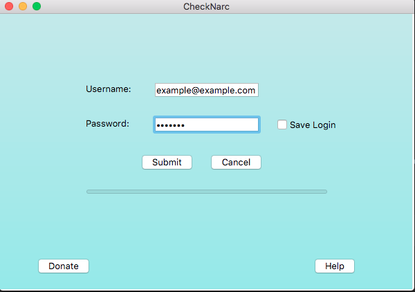

Tutorial
Using CheckNarc is quite simple! Once you've installed the application, open it up and enter your Arkansas PMP login credentials into the boxes like in the image below.

Hit the submit button and then CheckNarc will prompt you to pick a CSV file to read patient information from.
Then it'll ask you for a folder to save your patient prescription history in. Whatever folder you choose will be filled with lots of patient data, so it might be a good idea to create a new folder.
If the account authenticated with at the beginning was a subaccount, a dialog will popup asking which Master Account you would like to query under.
The data will begin to download and its progress can be tracked via the progress bar at the bottom of the screen. There is also a status update at the bottom of the screen which will alert you of what CheckNarc is up to.
Finally, once the application finishes downloading, you can navigate to the folder you chose to save in from earlier and find a PNG file for every patient on the CSV file. They should look something along the lines of the one below. Depending on the patient, an alert might show instead stating that the patient doesn't have any recent history. Don't be alarmed, this is relatively common.
Contact
If you have any questions or concerns, feel free to email me at support@checknarc.com.